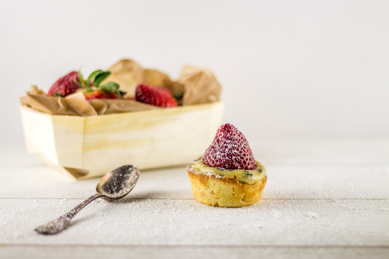
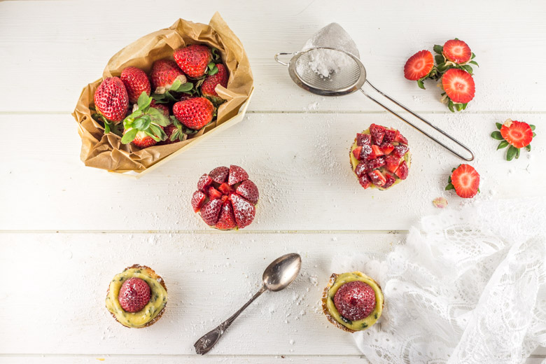

Des toutes mimis minis tartelettes fraise basilic

Aujourd’hui on se retrouve avec des minis tartelettes fraise basilic parfaites pour un dessert ou pour un petit goûter plein de gourmandise!
Comme vous le savez, nous sommes enfin au printemps! Le printemps et l’été sont mes saisons préférées et pas uniquement à cause du beau temps (enfin si un peu quand même!) mais aussi parce que les fruits et les légumes qu’elles ont à offrir sont ceux que j’apprécie tout particulièrement (et je ne vous parle pas des herbes aromatiques!!)! Pour l’occasion, j’ai cueilli toutes les jolies fleurs que j’ai pu trouver pour faire cette petite représentation! C’était une belle journée et nous nous sommes bien amusés!
Puis, en allant faire mes courses j’ai été surprise de voir sur les étals tout plein de paquets de fraises sur lesquels étaient écrit qu’elles provenaient de France. Je ne sais pas si je vous l’ai déjà dit mais à partir des mois d’avril-mai je ne fais que manger des fraises, je ne peux pas m’en passer j’adore ça! Alors je n’ai pas pu m’empêcher d’en acheter surtout que cette idée de minis tartelettes me trottait dans la tête!
Quand j’ai dit à mon chéri que je voulais faire des tartelettes fraise basilic il a plus ou moins fait la grimace car il n’avait jamais goûté l’association de ces deux ingrédients (non mais attends c’est la base non??) Cela m’a d’autant plus motivé à en faire, car je voulais absolument qu’il se rende compte à quel point c’est délicieux! J’avais dans l’idée de faire des minis tartelettes en utilisant mes moules à cupcakes et je pense réitérer avec d’autres mélanges car c’est la taille parfaite pour ne pas en manger en trop (même si au final on en mange trois au lieu d’une) ni pas assez! Au final, concernant les fraises, je dois avouer qu’elles manquaient un peu de goût alors je vais attendre pour en racheter mais nous nous sommes tout de même vraiment régalés!
Je vous laisse à présent découvrir la recette de ces tartelettes fraise basilic aussi mimis que minis 🙂
Ingrédients
- Farine - 125g
- Sucre glace - 45g
- Beurre mou - 75g
- Oeuf - 1
- Sel - 1 pincée
- Poudre d'amande - 2càs
- Gélatine - 2 feuilles (soit 4g)
- Basilic frais - 20 feuilles
- Sucre en poudre - 90g
- Oeuf - 3
- Beurre coupé en morceaux - 150g
- Fraises - 250g
Instructions
- Découper le beurre en morceaux
- Dans le bol de votre robot mélanger à vitesse moyenne le beurre et le sucre glace à l'aide de la feuille
- Quand le mélange devient crémeux y ajouter la farine, la poudre d'amandes et la pincée de sel
- Mélanger à nouveau et ajouter l’œuf
- Quand l’œuf est bien incorporé à la pâte la mettre en boule dans un film plastique
- Réserver au frigo pour 2h
- Préchauffer votre four à 180°
- Étaler votre pâte (ni trop fine ni trop épaisse)
- Beurrer vos moules à cupcakes
- Découper des cercles à l'aide d'un emporte-pièce (j'ai utilisé un bol) de façon à ce que la pâte recouvre le fond et monte bien tout en haut des moules à cupcakes
- Piquer à l'aide d'une fourchette le fond des tartelettes (si vous avez des billes de cuisson c'est encore mieux!)
- Enfourner pour 7min de cuisson (ou jusqu'à que la pâte soit dorée)
- Faire ramollir la gélatine dans de l'eau froide
- Dans un saladier, fouetter le sucre et les oeufs
- Découper le basilic très finement et incorporer le au mélange sucre-œufs
- Placer le saladier contenant ce mélange au dessus d'une casserole d'eau frémissante et laisser monter la température jusqu’à 80° tout en fouettant jusqu'à épaississement
- Essorer la gélatine et tout en fouettant, incorporez la à la crème chaude
- La température va alors baisser
- Une fois les 60° atteints, transférer la crème dans le bol de votre robot Vous pouvez passer la préparation au chinois pour supprimer les morceaux de basilic mais moi j'ai préféré les garder
- Mélanger à l'aide de la feuille à vitesse moyenne en ajoutant le beurre morceaux par morceaux en attendant à chaque fois qu'il soit parfaitement bien amalgamé
- Laissez refroidir la crème
- A l'aide d'une poche à douille, garnir les tartelettes de crème
- Replacer au frais pour que la crème ait la bonne consistance
- Garnir de fraises, saupoudrer de sucre glace et servez aussitôt!!


Les tips de la communauté
Excellente réception de cette association originale fraise-basilic en tartelettes miniatures. Plusieurs commentaires mentionnent l'idée ingénieuse d'utiliser des moules à cupcakes pour la cuisson. L'auteure conseille d'attendre mai pour des fraises de meilleure qualité et d'adapter le palais à cette saveur nouvelle.
Astuces
- Utiliser des moules à cupcakes pour faciliter la présentation et la cuisson individuelle
- Ajouter une réduction de balsamique pour complémenter les fraises
- Attendre la saison des fraises (mai) pour meilleur goût et ne pas payer trop cher
- Tester l'association fraise-basilic avant de la servir, c'est une saveur nouvelle pour certains
Variantes suggérées
- Remplacer le basilic par de la menthe fraîche
- Ajouter une réduction de balsamique vinaigré
Ajustements signalés
- remedier à ca alors ;)!! MErci pour ton comm et contente que l’idée des moules à cupcakes plaise! Bon dimanche, bisous